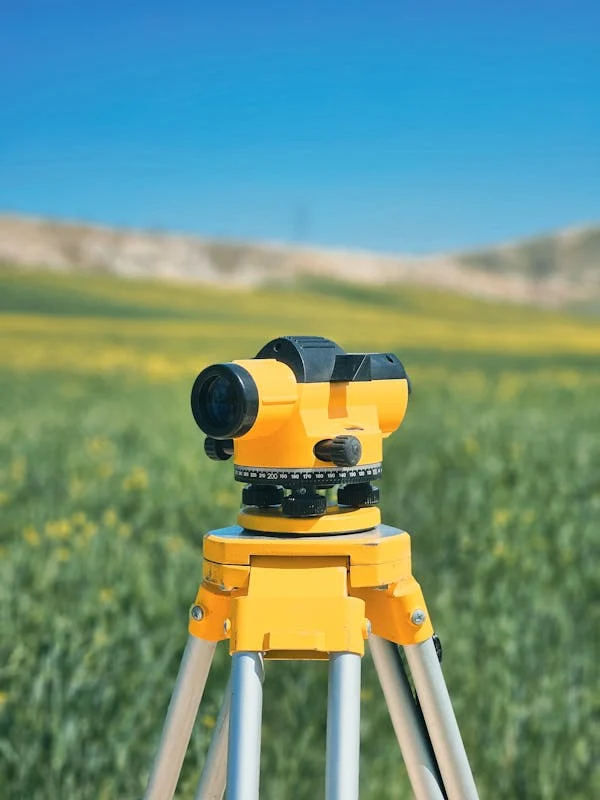
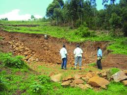
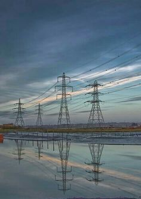
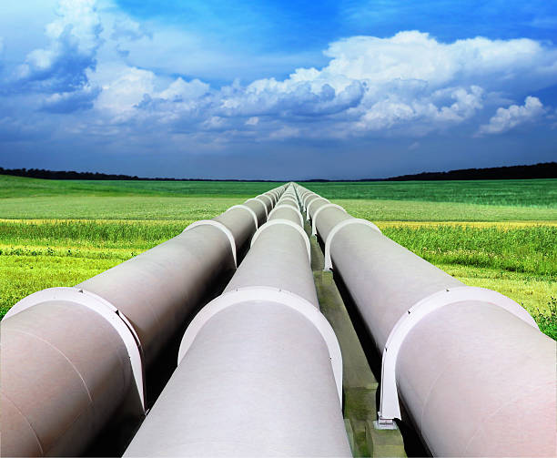

Boundary & land survey support
Field measurement and boundary-related work for land and property decisions.
The repeated placeholder cards have been replaced with a cleaner project-capability portfolio ready for verified company projects.

Field measurement and boundary-related work for land and property decisions.

Survey context for construction, infrastructure and development activities.

Survey and planning support for rural, agricultural and larger land parcels.

Alignment and corridor information for water, power and related infrastructure.

Route and site support for pipeline planning and installation.
Survey information supporting property documentation and sectional contexts.
Add verified project names, locations, dates and outcomes as the company portfolio is finalized.